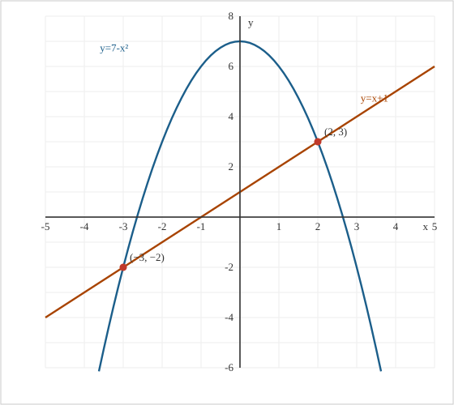

<script src="/assets/redirect.js"></script>
<section class="theory" data-section="P1-1.4">
<h2>1.4 Solving simultaneous equations (one linear and one quadratic)</h2>
<p class="src">Based on Cambridge International AS &amp; A Level Mathematics: Pure Mathematics 1 Coursebook (Hugh Neill, Douglas Quadling and Julian Gilbey), Chapter 1 Quadratics, printed pp.11–14 (the opening diagram of a line meeting a quadratic curve, and Worked example 1.9 style). Printed pages were read from P1.pdf (printed n = PDF n + 12, so pp.11–14 are PDF 23–26). Own wording and new numbers.</p>
<p class="key-words"><strong>Key words:</strong> <em>simultaneous equations</em>, <em>substitution</em>, <em>quadratic equation</em></p>
<h3>A line and a quadratic curve</h3>
<p>To solve <strong>simultaneous equations</strong> in which one equation is linear and the other is quadratic, use <strong>substitution</strong>: rearrange the linear equation to make one unknown the subject, then substitute into the quadratic equation. The result is a <strong>quadratic equation</strong> in a single unknown. Each real root gives a point where the line meets the curve.</p>
<figure><figcaption>The line \(y=x+1\) meets the curve \(y=7-x^2\) at \((-3,-2)\) and \((2,3)\).</figcaption></figure>
<div class="worked-example">
<h4>Worked example 1: A line and a circle given by \(x^2+y^2=25\)</h4>
<p class="src">Book: opening style and Worked example 1.9 style, printed pp.11–12 (the book uses a different pair, including a difference of squares). New numbers.</p>
<p>Solve the simultaneous equations \(y=x+1\) and \(x^2+y^2=25\).</p>
<ol class="steps">
<li>Substitute \(y=x+1\) into \(x^2+y^2=25\): \(x^2+(x+1)^2=25\). <span class="mark">M1</span></li>
<li>Expand: \(x^2+x^2+2x+1=25\), so \(2x^2+2x-24=0\), or \(x^2+x-12=0\). <span class="mark">M1</span></li>
<li>Factorise: \((x+4)(x-3)=0\), so \(x=-4\) or \(x=3\). <span class="mark">A1</span></li>
<li>When \(x=-4\), \(y=-3\); when \(x=3\), \(y=4\). The points are \((-4,-3)\) and \((3,4)\). <span class="mark">A1</span></li>
</ol>
<p class="final"><strong>Answer:</strong> \((-4,-3)\) and \((3,4)\)</p>
</div>
<div class="worked-example">
<h4>Worked example 2: A line and \(y=7-x^2\)</h4>
<p class="src">Book: Exercise 1D style, printed p.13. New numbers (the graph above uses this pair).</p>
<p>Solve the simultaneous equations \(y=x+1\) and \(x^2+y=7\).</p>
<ol class="steps">
<li>Substitute \(y=x+1\) into \(x^2+y=7\): \(x^2+(x+1)=7\), so \(x^2+x-6=0\). <span class="mark">M1</span></li>
<li>Factorise: \((x+3)(x-2)=0\), so \(x=-3\) or \(x=2\). <span class="mark">A1</span></li>
<li>When \(x=-3\), \(y=-2\); when \(x=2\), \(y=3\). The points are \((-3,-2)\) and \((2,3)\). <span class="mark">A1</span></li>
</ol>
<p class="final"><strong>Answer:</strong> \((-3,-2)\) and \((2,3)\)</p>
</div>
<h3>Common mistakes</h3>
<ul>
<li>Finding the \(x\)-values and forgetting to find the matching \(y\)-values from the linear equation.</li>
<li>A sign error when expanding \((x+k)^2\), or dividing a quadratic by 2 and dropping a term.</li>
<li>Discarding a negative root without a reason. Both roots may give valid intersection points.</li>
</ul>
<h3>Quick checks</h3>
<div class="quick-check">
<h4>Quick check 1</h4>
<p>Solve the simultaneous equations \(y=x+1\) and \(x^2+y=7\). What is the greater of the two \(x\)-values?</p>
<details><summary>Worked solution</summary>
<ol class="steps">
<li>Substitute: \(x^2+(x+1)=7\), so \(x^2+x-6=0\), \((x+3)(x-2)=0\). The roots are \(x=-3\) and \(x=2\). The greater \(x\)-value is \(2\) <span class="mark">A1</span></li>
</ol>
<p class="final"><strong>Answer:</strong> \(2\)</p>
</details>
</div>
<div class="quick-check">
<h4>Quick check 2</h4>
<p>Solve the simultaneous equations \(y=x+1\) and \(x^2+y=7\). What is the smaller of the two \(x\)-values?</p>
<details><summary>Worked solution</summary>
<ol class="steps">
<li>As in Quick check 1, the roots are \(x=-3\) and \(x=2\). The smaller \(x\)-value is \(-3\) <span class="mark">A1</span></li>
</ol>
<p class="final"><strong>Answer:</strong> \(-3\)</p>
</details>
</div>
<div class="quick-check">
<h4>Quick check 3</h4>
<p>Solve the simultaneous equations \(y=x+1\) and \(x^2+y=7\). What is the \(y\)-coordinate of the point with the greater \(x\)-value?</p>
<details><summary>Worked solution</summary>
<ol class="steps">
<li>The greater \(x\)-value is \(2\), and \(y=2+1=3\) <span class="mark">A1</span></li>
</ol>
<p class="final"><strong>Answer:</strong> \(3\)</p>
</details>
</div>
<p class="marks-key"><strong>Marks:</strong> M = method, A = accurate answer (depends on M), B = independent mark. Leave exact values exact.</p>
</section>
